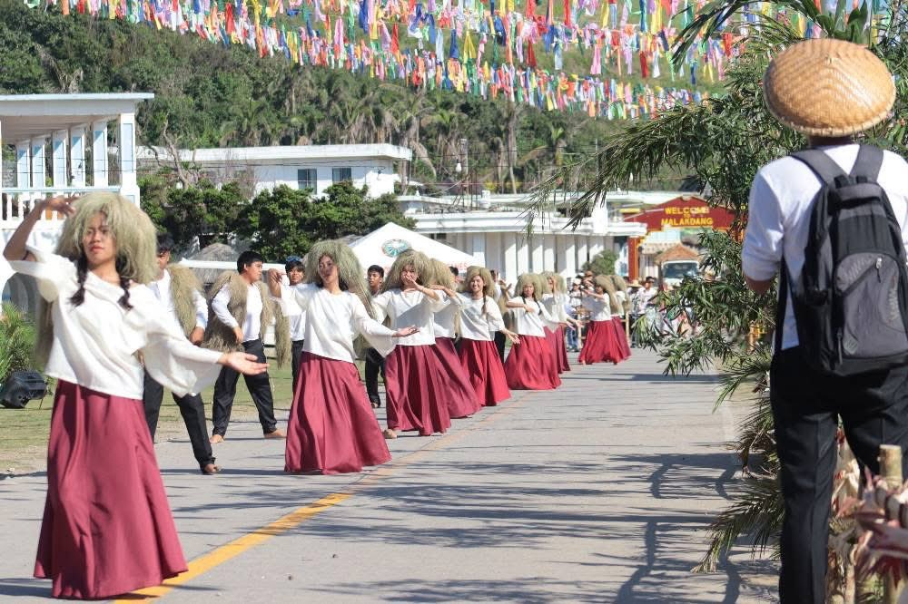
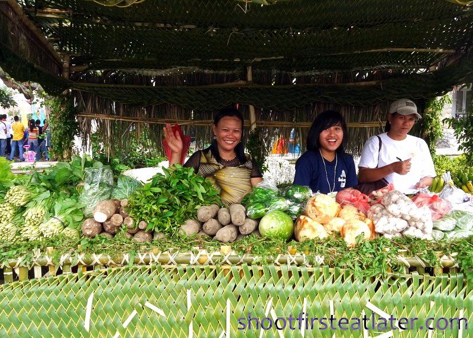
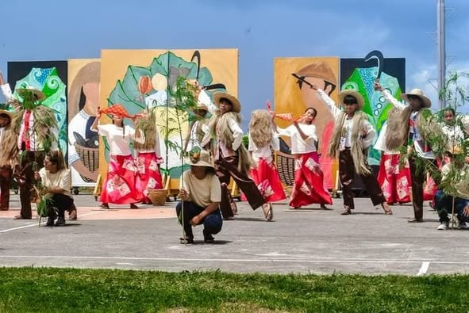

Vakul-Kanayi Festival

The Vakul-Kanayi Festival, held annually from April 25 to 27 in Sabtang, Batanes, celebrates Ivatan heritage through the iconic vakul—a headgear made from vuyavuy palm fibers worn by women—and the kanayi, a sleeveless jacket traditionally worn by men. This vibrant event features cultural performances, traditional games, street parades, and showcases of local crafts and cuisine, offering visitors an immersive experience into the rich traditions of the Ivatan people.
Kulay Festival

The "Kulay Festival" in Batanes, celebrated annually in April, is a vibrant event that celebrates the Ivatans' unique food preservation method, "Kulay," which involves preserving "Gabi" (taro) stalks and other root crops. The festival also features exhibits of preserved foods and other traditional activities. It's a significant part of Basco Day, showcasing Batanes' rich culture and livelihood. The Kulay Festival is an opportunity to experience the Ivatans' connection to their heritage and their traditional ways of life.
Vunung Festival

The Vunung Festival, celebrated annually from June 20 to 26 across the province of Batanes, with main events in Basco, commemorates the province's founding anniversary and highlights the Ivatan culture of communal sharing. "Vunung" refers to the traditional practice of preparing and sharing food wrapped in kabaya leaves, symbolizing unity and generosity among the Ivatan people. The week-long festivities feature cultural performances, culinary showcases, traditional dances, float parades, arts and crafts exhibits, and community gatherings that emphasize the shared identity and rich heritage of the Ivatans.